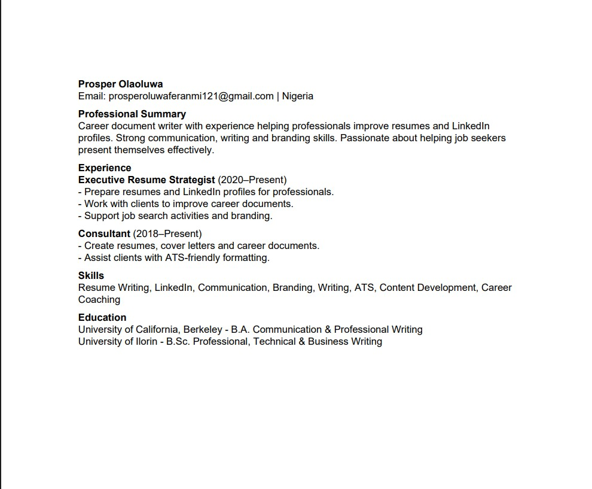
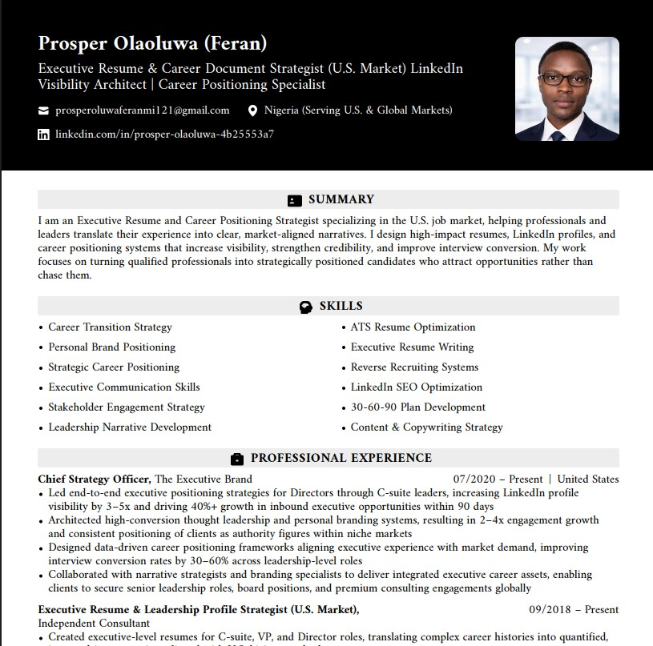

Case Study 01
A real example of the Virtue Careers method — my own resume, before and after.


Case Study 02
Grace's original resume didn't reflect the level of impact she'd actually had in her career. After a full positioning rebuild — reframing her achievements around measurable results a hiring manager could immediately recognize — she sent the new resume to a dental practice. The hiring manager called that same day, invited her in, and offered her the role on the spot.
"Grace found a job! She sent the resume you generated, and the dentist set up a call same day, then invited her in for an interview. She was offered a position on the spot."